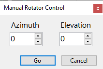

Rotator Control
The Rotator Control panel on the status bar shows the current position of the selected satellite and the antenna bearing, if the rotator control function is enabled:
Display
The large Azimuth and Elevation display shows the satellite location, the small numbers below it show the antenna bearing.
The satellite location is dimmed when the rotator control function is disabled. Click on Rotator on the status bar to enable or disable this function.
When rotator control is enabled, the current antenna bearing is marked on the Sky View panel with a red spot:
Tracking
When rotator control is enabled but the Track checkbox is not ticked, the panel only displays the antenna bearing but does not attempt to change it. Tick the Track checkbox to start tracking. Note that the check box is cleared when you switch to another satellite.
In the satellite tracking mode, the antenna bearing turns pink if it differs from the satellite position by more than 1.5 the Step Size setting entered in the rotator settings.
Manual Control
Click on the satellite position display to open the Manual Rotator Control window:

Stopping
To stop antenna rotation, either manual or due to the satellite tracking, click on the Stop button.